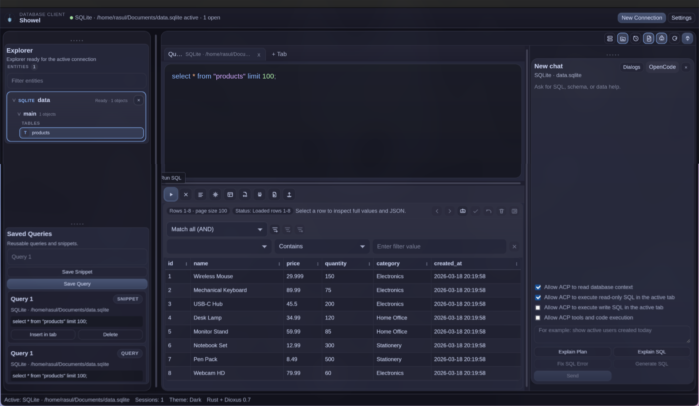

Query
Multi-tab SQL, formatting, history, pagination. Inline completions as you type. Tab accepts, keep typing to ignore.
Database client
A native desktop client for the databases you already run.
SQLite, PostgreSQL, MySQL, and ClickHouse. Write SQL, walk the schema, edit rows, export the result. An ACP agent sits in the same window if you want one. Turn it off and Shovel is still a SQL client.

SQLite · PostgreSQL · MySQL · ClickHouse · Rust · Dioxus · ACP
Panels you can hide. Queries that stay in tabs. Rows you can edit without leaving the grid.
Multi-tab SQL, formatting, history, pagination. Inline completions as you type. Tab accepts, keep typing to ignore.
Schemas, tables, views, columns. Open a table with one click. F2 renames. Delete drops, after you confirm.
Sort, filter, inspect JSON, open a row. Draft inserts, cell edits, and deletes, then apply or discard.
CSV in. CSV, JSON, XLSX, XML, HTML, and SQL out.
Threads persist on disk and follow the open connection. Streaming SQL, then insert it into the editor.
OpenCode from the registry, or embedded Ollama and DeepSeek. Secrets go in the OS keyring. There is no plaintext fallback.
ClickHouse connects, explores, queries, and exports. Row editing is still SQLite, PostgreSQL, and MySQL.
| Engine | Connect | Explore | Query | Export | Edit rows |
|---|---|---|---|---|---|
| SQLite | yes | yes | yes | yes | yes |
| PostgreSQL | yes | yes | yes | yes | yes |
| MySQL | yes | yes | yes | yes | yes |
| ClickHouse | yes | yes | yes | yes | not yet |
Builds are on GitHub Releases. Linux packages, a Windows installer, or cargo if you already have the toolchain.
echo "deb [arch=amd64 trusted=yes] https://fynth.github.io/Shovel/apt stable main" | sudo tee /etc/apt/sources.list.d/shovel.list sudo apt update && sudo apt install shovel
yay -S shovel
flatpak install --user ./shovel-linux-x86_64.flatpak flatpak run dev.shovel.app
cargo run -p app --features desktop
Nightly Rust, pinned in the repo. The Windows .exe needs WebView2. The APT repo is unsigned, so the source line uses trusted=yes.